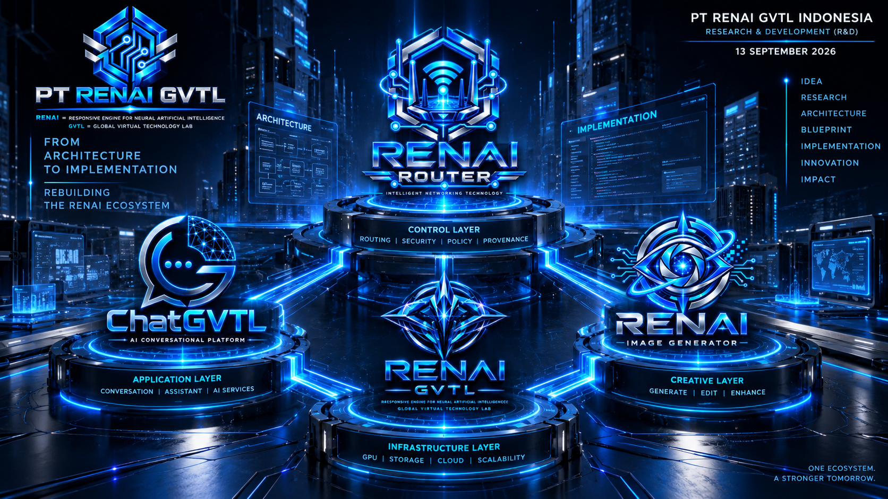

Pada 13 September 2026, PT RENAI GVTL Indonesia memasuki tahap lanjutan setelah beberapa hari melakukan pendalaman arsitektur dan pematangan fondasi RENAI Router.

Pada 13 September 2026 , PT RENAI GVTL Indonesia memasuki tahap lanjutan setelah beberapa hari melakukan pendalaman arsitektur dan pematangan fondasi RENAI Router .
Rangkaian aktivitas pada 9–11 September telah membawa RENAI Router dari gagasan arsitektural menuju blueprint yang semakin operasional.
Router ditetapkan sebagai critical internal infrastructure dan sebagai control layer yang menjadi bagian fundamental dalam ekosistem RENAI.
Hasil pematangan RENAI Router dijadikan dasar untuk menyusun kembali hubungan antara:
Router tidak lagi dipandang hanya sebagai komponen tambahan, tetapi sebagai bagian dari fondasi internal ekosistem RENAI.
ChatGVTL ditempatkan sebagai salah satu aplikasi utama yang nantinya menggunakan jalur Router untuk mengakses kemampuan AI dan service yang diperlukan.
Arsitektur diarahkan agar berbagai faktor dapat dikendalikan oleh lapisan internal RENAI, termasuk:
Dengan pendekatan ini, ChatGVTL dibangun sebagai bagian dari ekosistem yang menggunakan fondasi routing dan control layer RENAI.
Pengembangan RENAI Image Generator juga diarahkan untuk mengikuti fondasi arsitektur yang sama.
Konsep:
nantinya tidak berdiri sendiri, tetapi menjadi bagian dari ekosistem pemrosesan yang dapat dikontrol melalui RENAI Router .
Prinsip keamanan mulai diposisikan sebagai bagian dari arsitektur sejak tahap pembangunan, bukan sebagai tambahan setelah produk selesai.
Seluruh aktor dan service yang berinteraksi dengan Router diarahkan untuk memiliki identitas yang dapat diverifikasi dan mengikuti policy yang telah ditentukan.
Tahap ini juga menjadi momentum untuk melakukan penyusunan kembali komponen-komponen pengembangan agar produk tidak dibangun secara terpisah-pisah.
Fondasi yang sebelumnya dikembangkan melalui eksperimen, riset, dan berbagai iterasi mulai diarahkan menjadi satu ekosistem teknologi yang lebih terstruktur.
IDEA → RESEARCH → ARCHITECTURE → BLUEPRINT → IMPLEMENTATION → INNOVATION → IMPACT
Perjalanan PT RENAI GVTL Indonesia memasuki fase baru.
RENAI Router tetap menjadi fondasi dan control layer , sementara ChatGVTL dan RENAI Image Generator menjadi bagian dari produk yang dibangun di atas arsitektur tersebut.
Aktivitas ini bukan berarti seluruh sistem telah selesai atau memasuki production.
Tahap ini merupakan transisi dari pematangan konsep menuju implementasi dan pembangunan kembali, dengan arsitektur yang lebih jelas dibandingkan fase eksperimen sebelumnya.
Status: 🟢 R&D / Architecture-to-Implementation — ONGOING
Date:
13 September 2026
Organization:
PT RENAI GVTL Indonesia —
Research & Development (R&D)
13 September 2026 menjadi titik transisi dari fase pematangan arsitektur menuju implementation dan rebuilding ekosistem RENAI.
Fokus berikutnya adalah membawa arsitektur yang telah dirumuskan ke dalam pembangunan komponen dan produk yang nyata, dengan RENAI Router tetap berperan sebagai fondasi internal ekosistem.
© PT RENAI GVTL Indonesia — Research & Development (R&D)